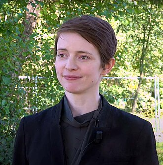
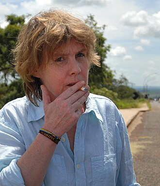
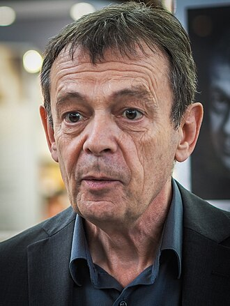
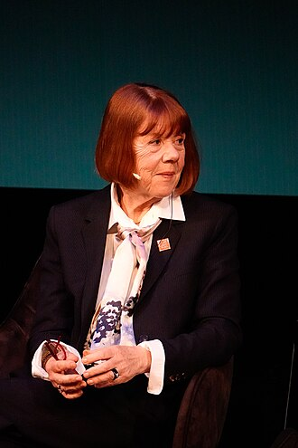
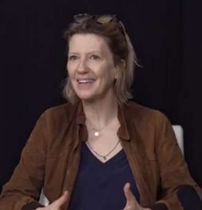

web/data/authors.json（逐条附出处与把握）；边：唯一源 relations/influences.md 镜像 web/data/relations.json。可信度 ✓ 已核 · ◐ 一手/自述 · ○ 转述 · ✗ 争议。web/data/authors.json; edges: single source relations.json (mirrors influences.md). Confidence ✓ verified · ◐ primary · ○ secondhand · ✗ disputed.一 · 节点 NodesI · Nodes

曼德尔 Emily St. John Mandel (née Fairbanks)
1979 春 · Merville, BC, Canada · English
灾难不是背景，是让微小联结显影的暗室。舞者转小说家，写了 7 部跨界小说；《Exit Party》让「两个美国」一确二真。
Dystopia as a darkroom for small bonds. Dancer turned novelist; seven crossover novels; in Exit Party two Americas are one-true-two.

瓦尔加 Frédérique Audoin-Rouzeau -> pen name Fred Vargas
1957-06-07 · Paris · French
罪案是文明史的病历；直觉（poésie）是理性的另一面。CWA Dagger 四冠（含独奖三连 + 与勒梅特共享一冠）。
Crime as the case-file of civilisation; intuition spelled poetry. CWA Dagger solo x3 + one shared = commonly 'four'.

勒梅特 Pierre Lemaitre
1951-04-19 · Paris · French
20 世纪法国的进步神话及其阴影：光荣岁月之下必有账单。55 岁出道，从 polar 走向社会史小说。
France's twentieth-century progress-myth and its bill. Debuted at 55; polar to social history.

佩利科 Gisèle Pelicot
1952-12-07 · Villingen, Germany → Île de Ré · French
la honte change de camp——羞耻要易边。被书写者变成书写者；主体性可以被拿回来。
Shame must change sides. From written-about to writer; subjectivity reclaimed.

佩里尼翁 Judith Perrignon
1967 · 巴黎（journaliste de formation） · French
把第一人称还给经历者：从 Van Gogh 兄弟到 FDR 到幸存者——一台记者的录音笔转写成生命。
First person returned to those who lived it: Van Gogh brothers, FDR, survivors — a reporter's tape as life-writer.

萬田緑平 萬田緑平 · Ryokhei Manda
1964 · 东京日野 → 前橋（群馬） · Japanese
延命より満足、治療より尊厳。2000+ 例在宅看取り，把死亡从 ICU 请回自家餐桌。
Dignity over prolonging. 2,000+ home deaths — death moved from ICU back to the family table.
普莱斯 & 托内曼 Simon Rowland Francis Price (1954–2011) & Peter F. Thonemann (b. 1977)
Price 27 Sep 1954 Manchester · 14 Jun 2011 卒 · Thonemann 1977 · English
Price 以《仪式与权力》重写了罗马皇帝崇拜研究；2011 年辞世时《古典欧洲的诞生》才刚面世。Thonemann 续写古典世界的记忆史。
Price rewrote Roman imperial-cult studies with Rituals and Power; he died in 2011, a year after Birth of Classical Europe appeared. Thonemann carries on the memory-history line.
威克姆 Christopher John Wickham FBA FLSW FRHistS
18 May 1950 · 英国 · English
《Framing》与《Inheritance》两书奠定其战后欧洲经济史首座——以陶器、税收、地权重写中世纪欧洲的诞生。
Framing + Inheritance crown him the post-war European economic historian par excellence — rewriting medieval Europe's birth through pottery, taxation, land.
乔丹 William Chester Jordan
7 April 1948 · 美国 · English
普林斯顿中世纪史掌门，卡佩王朝与「1315 大饥荒」研究的定论者——英语世界最好的中世纪通识写手。
Princeton's medievalist doyen; definitive on Capetians and the Great Famine of 1315 — the English-speaking world's finest medieval generalist.
格拉夫顿 Anthony Thomas Grafton
21 May 1950 · 纽约 · English
知识史第一人——从脚注到斯卡利杰，展示近代学术如何在文艺复兴被发明；43 部著作 · 200+ 论文。
The foremost intellectual historian of early modern Europe — from footnotes to Scaliger, showing how modern scholarship was invented in the Renaissance; 43 books, 200+ articles.
格林格拉斯 Mark Greengrass
7 September 1949 · 英国 · English
宗教改革的「慢溶解」叙事——以人物经历锚定制度史，把一百三十年的分裂写成一个整体。
The 'slow dissolution' narrative of the Reformation — anchoring institutional history on personal experience across 130 years of fracture.
蒂姆·布拉宁 Tim Christopher Wiles Blanning FBA FRICS MRSA
26 June 1942 · 英国 · 英语 · 法语 · 德语
《The Pursuit of Glory》以「五场革命」重写 1648–1815 的欧洲；《The Culture of Power and the Power of Culture》将 1780 年前后的欧洲文化生产重构为一个「荣誉-礼仪-公共领域」体系。
The Pursuit of Glory recasts 1648–1815 as 'five overlapping revolutions'; The Culture of Power and the Power of Culture reframes the long 18th century as an honorific-ceremonial-public-sphere system.
埃文斯 Sir Richard John Evans FBA
29 June 1947 · 伦敦 · English
第三帝国三部曲作者 · Regius 剑桥近代史讲座教授 · 2012 年封爵 · 当今英国最知名的公共史学家。
Author of the Third Reich Trilogy · Regius Professor of History at Cambridge · knighted 2012 · contemporary Britain's most prominent public historian.
克肖 Sir Ian Kershaw FBA FRHistS
29 April 1943 · Oldham, Lancashire · English
希特勒传记的代名词 · Bundesverdienstkreuz 1994 · 封爵 2002 · 企鹅欧洲史唯一执笔两卷的学者。
Synonym for Hitler biography · Bundesverdienstkreuz 1994 · knighted 2002 · the only scholar to write two volumes of the Penguin Europe series.
二 · 流派归属 SchoolsII · Schools
法式 néo-polar 文学派（Adamsberg 脉）
罪案 = 文明史的病历；直觉/诗学是常识的另一面 · 成员：瓦尔加crime as case-file of civilisation · members: Vargas
法国 polar 文学派 → 社会史小说
从 Balzac/Zola 到 20 世纪荣誉与废墟 · 成员：勒梅特Balzac/Zola to the century of glory and ru · members: Lemaitre
#MeToo 档案 / 见证文学
亲历者自夺笔 · 成员：佩利科the survivor takes the pen · members: Pelicot
法式传记/证言转写
把第一人称还给经历者 · 成员：佩里尼翁returning first person to the lived · members: Perrignon
soft-apocalypse 跨界文学
灾难—艺术—韧性母题 · 成员：曼德尔disaster-art-resilience · members: Mandel
日本在宅緩和ケア 生死观话语场
延命 vs 尊厳 的常识化 · 成员：萬田緑平dignity over prolonging · members: Manda
三 · 朋友圈 · 合著 Circles & Co-writesIII · Circles & Co-writes
| 作者author | edge | 同代 · 合作者peer / collaborator | 一句理由why | conf |
|---|---|---|---|---|
| 佩利科 | ◎ | Caroline Darian（女儿/作家） | 「M'endors pas」化学顺从运动；母女对表the M'endors pas campaign | verified |
| 佩利科 | ◎ | perrignon | 回忆录合著（证言转写）memoir co-write | verified |
| 佩利科 | ◎ | Manon Garcia（哲学家） | 《Living With Men》分析 Mazan 审判Living With Men on the trial | verified |
| 瓦尔加 | ◎ | Stéphane Audoin-Rouzeau（兄） | Three Evangelists 史家角色原型historian character source | verified |
| 瓦尔加 | ◎ | Jo Vargas（孪生姐） | 笔名来源；画名借自《赤足天使》pen-name source; painter | verified |
| 瓦尔加 | ◎ | Siân Reynolds（英译者） | 长期译者，Dagger 随译共认long-time translator | verified |
| 萬田緑平 | ◎ | 東畑開人（临床心理師） | 2026-02-11 对谈「步行是活着」2026-02-11 dialogue | verified |
| 萬田緑平 | ◎ | 青栁幸利（中之条研究） | 8000 步/日实证线8,000-steps/day evidence line | verified |
| 勒梅特 | ◎ | Albert Dupontel（导演） | 《Au revoir là-haut》电影改编，César 共获film adaptation; shared César | verified |
| 曼德尔 | ◎ | Patrick Somerville（剧集主创） | 《Station Eleven》HBO 改编 → Exit Party 回响Station Eleven HBO → the Exit Party echo | verified |
| 佩利科 | ✎ | perrignon | 证言转写合著 · 《Et la joie de vivre》testimonial co-write · 《Et la joie de vivre》 | verified |
| 佩里尼翁 | ✎ | Marceline Loridan-Ivens | 两度合著 · 《Et tu n'es pas revenu》《L'Amour d'après》two co-writes · 《Et tu n'es pas revenu》《L'Amour d'après》 | verified |
四 · 影响链 InfluenceIV · Influence
| 源from | edge | 向to | 一句理由why | conf |
|---|---|---|---|---|
| 瓦尔加 | ⇒ | 勒梅特 | 同代法国罪案双峰；书风构成法式 noir 两端（直觉美学 vs 道德写实）peers; the two poles of French crime | strong |
| 勒梅特 | ⇒ | 瓦尔加 | 2013 共获 CWA International Dagger；同被 Stephen King 表彰shared 2013 Dagger; both praised by King | strong |
| Balzac / Zola | ⇐ | 勒梅特 | 社会史四部曲承自十九世纪家族-产业史诗法9th-style family-industry epic | medium |
| Georges Simenon | ⇐ | 瓦尔加 | 心理侦探传统 + 罪案读成社会病理psychological detective line | medium |
| Primo Levi / 见证文学 | ⇐ | 佩里尼翁 | 口述史 × 文学转写（Loridan-Ivens 线）oral history × transcription | medium |
| 柏木哲夫 / 日本ホスピス緩和ケア | ⇐ | 萬田緑平 | 「善终」谱系 → 在宅路线分岔good-death lineage → home branch | medium |
| #MeToo（2017） | ⇒ | 佩利科 | Mazan 公开庭审 → 回忆录：运动的三级火箭public trial → memoir: the movement's third stage | verified |
| 瓦尔加 | ⇒ | 曼德尔 | 皆用「一件艺术图像作谜面发动机」（美学化为装置）both drive plot from a single work of art | medium |
五 · 每位作者 Deep dossiersV · Per-author dossiers
曼德尔 · Mandel
生平轨迹 TimelineTimeline
| y | 事件event | conf |
|---|---|---|
| 1979 | 生于 Merville, BC；父（美裔）越战拒役水管工、母（加裔）家暴机构社工；五兄妹 born Merville, BC; American-Vietnam-C.O. father; social-worker mother; five kids | ✓ |
| ~15 | 家庭学校至约 15 岁；无高中文凭；写作者纪律（日记作业） homeschooled to ~15; no diploma; diary-as-homework discipline | ✓ |
| 18 | 入学多伦多舞剧院学校（当代舞）；毕业背上不少学贷 School of Toronto Dance Theatre (contemporary dance); graduating with debt | ✓ |
| 2002 | 蒙特利尔动笔处女作《Last Night in Montreal》 begins Last Night in Montreal in Montreal | ✓ |
| 2009 | 《Last Night in Montreal》出版（Unbridled；非 2006） Last Night in Montreal out (Unbridled), not 2006 | ✓ |
| 2010–2012 | 《The Singer's Gun》《The Lola Quartet》；行政助理夜班 + The Millions 专栏 TSG (2010) & The Lola Quartet (2012); admin day-job + The Millions | ✓ |
| 2014 | 《Station Eleven》：NBA finalist · HBO 改编 · 150 万+ 册 Station Eleven: NBA finalist; HBO; 1.5M+ copies | ✓ |
| 2015 | 女儿出生（2015 vs 2016 小争议）；Clarke 奖 daughter born (2015); Clarke Award | ✓ |
| 2020–2022 | 《The Glass Hotel》Giller finalist；《Sea of Tranquility》Goodreads Choice；2022 年与 Kevin 离婚 Glass Hotel Giller finalist; Sea of Tranquility out; divorces Kevin 2022 | ✓ |
| 2025 | 与摄影师 Laura Barisonzi 在布鲁克林 Greenlight 书店结婚 marries Laura Barisonzi at Greenlight Bookstore, Brooklyn | ✓ |
| 2026-09 | 第 7 部长篇《Exit Party》（Knopf 2026-09-15）；「最政治、最酷儿、最好」 Exit Party out 2026-09-15; 'my most political, most queer, best novel' | ✓ |
作品 WorksWorks
曼德尔 · Emily St. John Mandel (née Fairbanks) 作品年表（金环 = 本批书单）Mandel works by year (gold ring = this batch)
| y | title | 备注note | conf |
|---|---|---|---|
| 2009 | Last Night in Montreal | 处女作；蒙特利尔 debut; Montreal | ✓ |
| 2010 | The Singer's Gun | Prix Mystère de la Critique 2014；Exit Party 的阿里/安东/格里森源头 Prix Mystère 2014; A-side DNA of Exit Party | ✓ |
| 2012 | The Lola Quartet | 独角戏三部之一 third Unbridled novel | ✓ |
| 2014 | Station Eleven | 破圈之作；Clarke 2015 breakout; Clarke 2015 | ✓ |
| 2020 | The Glass Hotel | Giller finalist；海边 Ponzi 帝国 Giller finalist; coastal Ponzi empire | ✓ |
| 2022 | Sea of Tranquility | 时间旅行 + 巴黎穹顶 time travel + Paris domes | ✓ |
| 2026 | Exit Party | 本批主打；A/B 双美国 this crop's headliner; A/B two Americas | ✓ |
奖项 AwardsAwards
| y | award | note |
|---|---|---|
| 2014 | Prix Mystère de la Critique | The Singer's Gun |
| 2014 | National Book Award finalist | Station Eleven |
| 2015 | Arthur C. Clarke Award | Station Eleven |
| 2015 | Toronto Book Award · Tournament of Books | Station Eleven |
| 2015 | PEN/Faulkner finalist · Baileys longlist | Station Eleven |
| 2017 | Prix des Libraires du Québec | Station Eleven |
| 2020 | Scotiabank Giller finalist | The Glass Hotel |
| 2022 | Goodreads Choice Award, SF | Sea of Tranquility |
| 2020/2022 | Obama 年度书单 | Glass Hotel & Sea of Tranquility |
朋友圈 CircleCircle
- Patrick Somerville ◎ — 《Station Eleven》剧集 showrunnerStation Eleven HBO showrunner ✓
- Laura Barisonzi ◎ — 2025 起配偶、摄影师；首读者与作者照拍摄者wife (2025), photographer, first reader ✓
- Kevin Mandel ◇ — 前夫（2022 离），剧作家/招聘高管ex-husband (2022), writer & executive recruiter ✓
- Katherine Fausset / Emilie Jacobson ◎ — 文学代理（Curtis Brown）literary agents (Curtis Brown) ✓
- Semi Chellas ✎ — Last Night in Montreal 电影共编剧film co-writer ✓
- Sam Esmail（Mr. Robot 系） ◎ — Sea of Tranquility 影集合作方Sea of Tranquility TV partner ✓
- Omar El Akkad ⇌ — 同代对谈（American War 作者）；「直书美国分裂」的搭档声音peer conversations; American War author ✓
- The Millions 编辑部 ◎ — 2010 年起任 staff writerstaff writer since 2010 ✓
立场与一贯关切 StanceStance
为何此刻 Why nowWhy now
核对账本 LedgerLedger
| 主张claim | 来源source | conf |
|---|---|---|
| Last Night in Montreal = 2009（旧卡 2006 错误） | publishersweekly.com; emilymandel.com; amheath.com | ✓ |
| 2025 与 Laura Barisonzi 结婚（Greenlight 书店） | publishersweekly.com; en-wiki; theguardian.com | ✓ |
| 2022 与 Kevin Mandel 离婚（‘prove divorce to Wikipedia’） | irishtimes.com; en-wiki | ✓ |
| 女儿 2015 出生（2026 时 10 岁） | en-wiki; theguardian.com | ✓ (Grokipedia 2016 ◐) |
| homeschool 至约 15 岁、无高中文凭 | theguardian.com; newyorker.com; monroeccc.edu | ✓ |
| The Millions staff writer 自 2010 | themillions.com | ✓ |
| 涉 Anthropic 版权诉讼（Bartz v. Anthropic 和解） | esquire.com 2026-09-09; apnews.com | ✓ |
| 无大纲硬写；后半推翻重写 | theglobeandmail.com; therumpus.net | ✓ |
未核 UnverifiedUnverified
瓦尔加 · Vargas
生平轨迹 TimelineTimeline
| y | 事件event | conf |
|---|---|---|
| 1957 | 生于巴黎；父超现实主义圈作家 Philippe Audoin；孪生姐 Jo；兄 Stéphane born Paris; surrealist-writer father; twin Jo; brother Stéphane | ✓ |
| 1979 | 于巴黎七大（Jussieu）完成考古动物学博士（Sorbonne），研究方向：中世纪疾病媒介/畜牧业 archaeozoology doctorate at Jussieu; medieval disease vectors | ✓ |
| 1980s–90s | CNRS 研究员（考古动物学）；业余写侦探小说 CNRS researcher; crime fiction sidelines | ✓ |
| 1995 | 《Debout les morts》——Les Évangélistes 三部曲第一部出版 Debout les morts, first of The Three Evangelists | ✓ |
| 2001 | 《Pars vite et reviens tard》——Adamsberg 系列国际破圈 Pars vite et reviens tard, Adamsberg's international breakout | ✓ |
| 2006/2007/2009 | CWA International Dagger 独奖三连 three solo CWA Daggers | ✓ |
| 2013 | 与 Lemaitre 共享 CWA Dagger（第四冠） shared CWA Dagger with Lemaitre | ✓ |
| 2018 | Prince of Asturias 奖（文学） Prince of Asturias Award (Literature) | ✓ |
| 2026-04-08 | 《Une unique lueur》——Adamsberg #11（Flammarion） Une unique lueur, Adamsberg #11 | ✓ |
作品 WorksWorks
瓦尔加 · Frédérique Audoin-Rouzeau -> pen name Fred Vargas 作品年表（金环 = 本批书单）Vargas works by year (gold ring = this batch)
| y | title | 备注note | conf |
|---|---|---|---|
| 1995 | Debout les morts / Les Évangélistes | 三部曲第一部 first of The Evangelists trilogy | ✓ |
| 2001 | Pars vite et reviens tard | 破圈代表作 breakout | ✓ |
| 2017 | Quand sort la recluse | 蜘蛛意象的 Adamsberg 作 the recluse-spider Adamsberg | ✓ |
| 2026 | Une unique lueur | Adamsberg #11；本批书单法国代表 Adamsberg #11; this crop's French entry | ✓ |
奖项 AwardsAwards
| y | award | note |
|---|---|---|
| 2006 | CWA International Dagger | solo |
| 2007 | CWA International Dagger | solo |
| 2009 | CWA International Dagger | solo |
| 2013 | CWA International Dagger | shared with Lemaitre ('four in total' wording) |
| 2018 | Prince of Asturias Award | Literature |
朋友圈 CircleCircle
- Jo Vargas（孪生姐） ◎ — 画家；笔名来源（借自《赤足天使》女主），常为法语版封面作画painter; the pen-name's source and cover artist ✓
- Stéphane Audoin-Rouzeau（兄） ◎ — 一战史家；The Three Evangelists 史家角色原型WWI historian; character source ✓
- Philippe Audoin（父） ◎ — 作家/超现实主义圈（与 Breton 亲近）writer in the Surrealist circle ✓
- Siân Reynolds（英译者） ✎ — 长期译者；Dagger 奖随译共认long-time translator; Dagger recognition follows ✓
- Pierre Lemaitre ⇌ — 同代双峰；2013 同届 CWA Dagger（共享一冠）peers; shared 2013 Dagger ✓
立场与一贯关切 StanceStance
为何此刻 Why nowWhy now
核对账本 LedgerLedger
| 主张claim | 来源source | conf |
|---|---|---|
| Une unique lueur = Adamsberg #11；Flammarion 2026-04-08 | fr.wikipedia (éd. Flammarion) | ✓ |
| ISBN broché 978-2-08-016071-3 / EPUB 978-2-08-016097-3 | éditeur/distributor | ✓ |
| CWA 独奖三连 + 2013 共享 = 常见「四冠」（fr.wikipedia 合计独奖三度） | CWA annals | ✓ |
| 父 Philippe Audoin、孪生姐 Jo、兄 Stéphane | fr.wikipedia; 多家访谈 | ✓ |
| 笔名源自《赤足天使》/孪生姐 Jo | fr.wikipedia | ✓ |
| 1979 Jussieu 考古动物学博士 | fr.wikipedia | ✓ |
未核 UnverifiedUnverified
勒梅特 · Lemaitre
生平轨迹 TimelineTimeline
| y | 事件event | conf |
|---|---|---|
| 1951 | 生于巴黎 born Paris | ✓ |
| 1970s–2000s | 心理学家/教师（心理创伤与残疾儿童工作）→ 编剧/模写作 psychologist-teacher; then screenwriting | ✓ |
| 2006 | 出道作《Travail soigné》（55 岁） debut Travail soigné at 55 | ✓ |
| 2011 | 《Alex》——反转式施害者 polar 高峰 Alex, the twist-perpetrator peak | ✓ |
| 2013 | 《Au revoir là-haut》Goncourt；次年 CWA 与 Vargas 共享 Au revoir là-haut: Goncourt; then shared Dagger | ✓ |
| 2022–2026 | Les Années glorieuses 四部曲：Le Grand Monde→Le Silence et la colère→… →Les Belles Promesses（终章 2026-01-06） Glorious Years quartet, ending Les Belles Promesses 2026-01-06 | ✓ |
作品 WorksWorks
勒梅特 · Pierre Lemaitre 作品年表（金环 = 本批书单）Lemaitre works by year (gold ring = this batch)
| y | title | 备注note | conf |
|---|---|---|---|
| 2006 | Travail soigné | 出道 polar debut | ✓ |
| 2011 | Alex | 反转式施害者峰作 twist peak | ✓ |
| 2013 | Au revoir là-haut | Goncourt 2013；一战的荣光账单 Goncourt 2013; WWI glory-account | ✓ |
| 2022 | Le Grand Monde | 四部曲卷一 quartet vol.1 | ✓ |
| 2023 | Le Silence et la colère | 四部曲卷二 quartet vol.2 | ✓ |
| 2026 | Les Belles Promesses | 四部曲终章；ISBN 9782702191477；本批书单法国代表 quartet finale; this crop's French entry | ✓ |
奖项 AwardsAwards
| y | award | note |
|---|---|---|
| 2013 | Prix Goncourt | Au revoir là-haut |
| 2013 | CWA International Dagger | shared with Vargas (Camille series) |
| 2018 | César (film adaptation) | cinema awards for Au revoir là-haut |
朋友圈 CircleCircle
- Albert Dupontel ✎ — 《Au revoir là-haut》电影导演；César 2018 共获film director; shared César 2018 ✓
- Fred Vargas ⇌ — 同代双峰；2013 同届 CWA Daggerpeer; shared 2013 Dagger ✓
- Stephen King ⇐ — 公开表彰：两位法国作者 K 皆称道public praise from King ◐
立场与一贯关切 StanceStance
为何此刻 Why nowWhy now
核对账本 LedgerLedger
| 主张claim | 来源source | conf |
|---|---|---|
| Les Belles Promesses ISBN 9782702191477，512pp，2026-01-06 Calmann-Lévy | calmann-levy 目录 | ✓ |
| 旧卡 ISBN 9782702189825 / 543pp 为错 | 对比核实 | ✓→更正 |
| Goncourt 2013 Au revoir là-haut | 多源一致 | ✓ |
| 1951 生；55 岁出道 | fr.wikipedia | ✓ |
未核 UnverifiedUnverified
佩利科 · Pelicot
生平轨迹 TimelineTimeline
| y | 事件event | conf |
|---|---|---|
| 1952-12-07 | 生于德国菲林根（Villingen），德军家庭出身、入法籍 born Villingen, Germany; French-naturalized | ✓ |
| 1960s | 在格勒诺布尔附近的农场长大；父亲是流动马戏团兽医（Paillards） farm childhood near Grenoble; circus-veterinarian father | ✓ |
| 1971–72 | 遇见多米尼克；1973-04 结婚 meets Dominique; married April 1973 | ✓ |
| 1980s–2003 | EDF 物流干部 25 年；2003 退休（Mazan 宅） EDF logistics executive 25 yrs; retires 2003 to Mazan | ✓ |
| 2011 | 病倒；多米尼克开始系统性下药与邀客施暴（十余载 50+ 男） illness; the night-time drug-and-rape regime begins | ✓ |
| 2014 | 与多米尼克的 Aznavour 巡演合影成为「明面恩爱」的证据 the public couple façade | ◐ |
| 2020-10/11 | 超市保安发现多米尼克拍摄裙底视频报警；11-02 被捕；12 月 Thornyard 搜出 4000+ 影像 CCTV exposure; arrest; 4,000+ files found | ✓ |
| 2024-09→12 | Avignon 公开审判（拒匿名）；2024-12-19 判 20 年 + 51 人定罪 public trial; 2024-12-19 verdict | ✓ |
| 2025-01-21 | France 2 纪录片《Soumission chimique》播出 France 2 documentary airs | ✓ |
| 2025-10-08/09 | 仅 Husamettin D. 上诉（Nîmes），判 10 年（+1） sole appeal, Husamettin D., 10 years | ✓ |
| 2026-02-17 | 回忆录《Et la joie de vivre》22 语同步发行 memoir out in 22 languages | ✓ |
作品 WorksWorks
佩利科 · Gisèle Pelicot 作品年表（金环 = 本批书单）Pelicot works by year (gold ring = this batch)
| y | title | 备注note | conf |
|---|---|---|---|
| 2026 | Et la joie de vivre (A Hymn to Life) | 本批书单法国证人；22 语同步 this crop's French testament | ✓ |
奖项 AwardsAwards
| y | award | note |
|---|---|---|
| 2025 | Time 年度女性（2024/2025 提名为全球象征） | public recognition |
朋友圈 CircleCircle
- Judith Perrignon ✎ — 回忆录合著（证言转写）memoir co-write ✓
- Caroline Darian（女儿） ◎ — 「M'endors pas」化学顺从运动 + France 2 纪录片the M'endors pas campaign ✓
- Manon Garcia（哲学家） ◎ — 《Living With Men》分析 Mazan 审判Living With Men on the trial ✓
- Dominique Pelicot（前夫） ◇ — 施害者；主犯 20 年刑the perpetrator; 20 years ✓
立场与一贯关切 StanceStance
为何此刻 Why nowWhy now
核对账本 LedgerLedger
| 主张claim | 来源source | conf |
|---|---|---|
| 出生 1952-12-07，Villingen；农场出身 | NPR excerpt | ✓ |
| EDF 物流干部 25 年；2003 退休 | NPR excerpt | ✓ |
| 2020-10 超市监控拆穿；11-02 逮捕；4000+ 影像（12-2020） | BBC; le monde; Global Voices | ✓ |
| 2024-12-19 判 20 年/51 人；2025-10 唯一上诉 Husamettin D.（10 年） | tribunal records | ✓ |
| France 2 纪录片 2025-01-21 | France 2 programming | ✓ |
| 回忆录 Flammarion 2026-02-17，ISBN 9782080497260，320pp | éditeur | ✓ |
| 离婚(2001)/再婚(2007)来源仅 fr.wikipedia，与一手配偶史冲突 | fr.wikipedia | ✗ 未统一 |
未核 UnverifiedUnverified
佩里尼翁 · Perrignon
生平轨迹 TimelineTimeline
| y | 事件event | conf |
|---|---|---|
| 1991–2007 | Libération 记者 reporter at Libération | ✓ |
| 2007– | 作家/转写者；Europe 1→France Culture writer-transcriber; France Culture | ✓ |
| 2015 | SGDL Révélation 奖 SGDL Révélation prize | ✓ |
| 2015/2018 | 与 Loridan-Ivens 两度合著 two co-writes with the Holocaust survivor | ✓ |
| 2026-02 | 与 Pelicot 的《Et la joie de vivre》出版 Et la joie de vivre published with Pelicot | ✓ |
作品 WorksWorks
佩里尼翁 · Judith Perrignon 作品年表（金环 = 本批书单）Perrignon works by year (gold ring = this batch)
| y | title | 备注note | conf |
|---|---|---|---|
| 2011 | PTSD: la chasse est ouverte | 创伤在场的叙事方法 trauma-in-present-tense method | ◐ |
| 2015 | Et tu n'es pas revenu | 与 Loridan-Ivens with Loridan-Ivens | ✓ |
| 2018 | L'Amour d'après | 与 Loridan-Ivens with Loridan-Ivens | ✓ |
| 2026 | Et la joie de vivre | 与 Pelicot with Pelicot | ✓ |
奖项 AwardsAwards
| y | award | note |
|---|---|---|
| 2015 | SGDL Révélation | recognition |
朋友圈 CircleCircle
- Marceline Loridan-Ivens ✎ — 《Et tu n'es pas revenu》(2015)、《L'Amour d'après》(2018) 两度合著two co-writes ✓
- Gisèle Pelicot ✎ — 2026 Et la joie de vivre 合著；Sophie de Closets 编辑2026 memoir co-write; ed. Sophie de Closets ✓
- Ariane Chemin / Eva Joly ✎ — 合著谱系（法国大政治转写）co-writing lineage ✓
- France Culture（Grandes Traversées 等） ◎ — 纪录片/播客制作；2015 SGDL Révélationradio documentary producer ✓
立场与一贯关切 StanceStance
为何此刻 Why nowWhy now
核对账本 LedgerLedger
| 主张claim | 来源source | conf |
|---|---|---|
| Libération 1991–2007 | 出版社简介 | ✓ |
| 2015 SGDL Révélation | SGDL annals | ✓ |
| 《Notre guerre civile》= Grasset–France Culture 合制（此前「Louise Michel 出版方」混淆已澄清） | 出版社/电台节目志 | ✓ |
| Grandes Traversées 制作：Ali 2018、Sinatra 2019、Louise Michel 2021、Thatcher | France Culture 节目存档 | ✓ |
| Springsteen 系列索引于 2023-06（2017 未确认） | France Culture 索引 | ◐ |
未核 UnverifiedUnverified
萬田緑平 · Manda
生平轨迹 TimelineTimeline
| y | 事件event | conf |
|---|---|---|
| 1964 | 东京日野生；大学时代跳级、2 浪后入群馬大学医学部（1991 年卒） born Hino, Tokyo; two gap years; Gunma Medical 1991 | ✓ |
| 1991–2000s | 外科医（一般外科→消化器外科） surgeon (general→GI) | ✓ |
| 2008 | 创设在宅専門診療クリニック「いっぽ」（高崎）；开始看取り founds home-care clinic ippo (Takasaki) | ✓ |
| 2008–2017 | 在宅看取り 1400+ 例 1,400+ home deaths | ✓ |
| 2017 | 独立开设自营诊所（在宅緩和中心继续扩大） independent clinic; cumulative 2,000+ by journey | ✓ |
| 2025-11-27 | 《棺桶まで歩こう》发售（河出書房新社） Kanoke made arukou out 2025-11-27 | ✓ |
| 2026-07 | 累计 15 万部超 150k+ copies | ✓ |
作品 WorksWorks
萬田緑平 · 萬田緑平 · Ryokhei Manda 作品年表（金环 = 本批书单）Manda works by year (gold ring = this batch)
| y | title | 备注note | conf |
|---|---|---|---|
| 2017 | 言語化できない痛み（?） | 系列首作（书名以书评目录核） first nonfiction (title id from reviews) | ◐ |
| 2020 | がん治療とロングテール | 治疗与「长尾」的批判 treatment & the long tail | ◐ |
| 2025 | 棺桶まで歩こう | 本批书单日本代表；ISBN 9784344987937 this crop's Japanese entry | ✓ |
朋友圈 CircleCircle
- 東畑開人（临床心理師） ⇌ — 2026-02-11 对谈「步行是活着」2026-02-11 dialogue ✓
- 青栁幸利（中之条研究） ◎ — 每日 8000 步 / 快走 20 分钟实证线the 8,000-steps evidence line ◐
- 香山リカ（精神科医） ⇌ — 《看取りの作法》作者；同话语场fellow death-discourse voice ◐
立场与一贯关切 StanceStance
为何此刻 Why nowWhy now
核对账本 LedgerLedger
| 主张claim | 来源source | conf |
|---|---|---|
| 真实 ISBN-13 9784344987937（旧 9784344987934 无效） | NDL/河出 | ✓ |
| 发售 2025-11-27，224pp，¥1034 | 河出/书店 | ✓ |
| 销量 6.5 万(2026-01-18)→13 万(2026-05-08)→15 万+(2026-07-13) | 河出销售通讯 | ✓ |
| b.1964 东京日野；2 浪；群馬 1991；外科→2008 いっぽ→2017 自营 | 作者简介/采访 | ✓ |
| 看取り 1400+（2008–2017）；累计 2000+ | 作者简介 | ✓ |
未核 UnverifiedUnverified
普莱斯 & 托内曼 · Price & Thonemann
生平轨迹 TimelineTimeline
| y | 事件event | conf |
|---|---|---|
| 1954 | Simon Price 生于曼彻斯特 Simon Price born in Manchester | ✓ |
| 1984 | Price《Rituals and Power》出版——重写罗马皇帝崇拜 Price publishes Rituals and Power: Roman Provincial Worship of Emperors | ✓ |
| 2010 | 合著出版 The Birth of Classical Europe（Vol.1） Co-authors Birth of Classical Europe (Vol.1) | ✓ |
| 2011 | Price 因肝癌去世，享年 56 岁 Price dies of liver cancer, aged 56 | ✓ |
| 2018 | Thonemann 出版《An Introduction to Greek Epigraphy》 Thonemann publishes Introduction to Greek Epigraphy | ✓ |
| 2023 | Thonemann 出版《Money in the Western Tradition》 Thonemann publishes Money in the Western Tradition | ✓ |
作品 WorksWorks
普莱斯 & 托内曼 · Simon Rowland Francis Price (1954–2011) & Peter F. Thonemann (b. 1977) 作品年表（金环 = 本批书单）Price & Thonemann works by year (gold ring = this batch)
| y | title | 备注note | conf |
|---|---|---|---|
| 1984 | Rituals and Power | 罗马行省皇帝崇拜研究，开山之作 Roman provincial worship of emperors | ✓ |
| 1999 | The History of Greece (2nd ed.) | 牛津希腊史教科书 Oxford Greek-history textbook | ✓ |
| 2010 | The Birth of Classical Europe | 企鹅欧洲史 Vol.1（Price 遗作之一） Penguin Europe Vol.1 (Price's late work) | ✓ |
| 2018 | An Introduction to Greek Epigraphy | Thonemann 独著 · 剑桥 Thonemann sole-authored, Cambridge | ✓ |
| 2023 | Money in the Western Tradition | Thonemann · 从古希腊到比特币 Thonemann · from ancient Greece to Bitcoin | ✓ |
奖项 AwardsAwards
| y | award | note |
|---|---|---|
| 2011 | Price 逝后学界追念 | The Guardian 讣告；TLS 悼念 |
立场与一贯关切 StanceStance
为何此刻 Why nowWhy now
核对账本 LedgerLedger
| 主张claim | 来源source | conf |
|---|---|---|
| Simon Price = classical scholar, Oxford University College (Fellow & Tutor 1980–2011) | Guardian obit 2011-08-21 | ✓ |
| Price died of liver cancer, 14 June 2011, aged 56 | Guardian obit · Wikipedia | ✓ |
| Peter Thonemann = Professor of Greek, University of Adelaide | classics.ox.ac.uk | ✓ |
威克姆 · Wickham
生平轨迹 TimelineTimeline
| y | 事件event | conf |
|---|---|---|
| 1950 | 出生于英国 Born in Britain | ✓ |
| 1975 | 牛津博士 Oxford DPhil | ○ |
| 1984 | 《Early Medieval Italy》出版 Early Medieval Italy published | ✓ |
| 1994 | 《Land and Power》出版 Land and Power published | ✓ |
| 1998 | 入选英国国家学术院 FBA Elected Fellow of the British Academy (FBA) | ✓ |
| 2005 | 《Framing the Early Middle Ages》出版 · 任 Chichele 中世纪史教授 Framing published; Chichele Professor of Medieval History | ✓ |
| 2009 | 出版 The Inheritance of Rome (Vol.2) Publishes Inheritance of Rome (Vol.2) | ✓ |
| 2010 | 《Inheritance》获 Wolfson History Prize Inheritance wins Wolfson History Prize | ✓ |
| 2014 | 获 Royal Historical Society Serena Medal Awarded the Serena Medal (RHS) | ✓ |
| 2016 | 《Medieval Europe》出版 · 荣休 Medieval Europe published; retirement from Chichele chair | ✓ |
作品 WorksWorks
威克姆 · Christopher John Wickham FBA FLSW FRHistS 作品年表（金环 = 本批书单）Wickham works by year (gold ring = this batch)
| y | title | 备注note | conf |
|---|---|---|---|
| 1984 | Early Medieval Italy | 中央公权力与地方社会 Central power and local society | ✓ |
| 1992 | The Mountains and the City | 托斯卡娜地区 400–1000 Tuscan backcountry c.400–1000 | ✓ |
| 1994 | Land and Power | 中世纪意大利研究 Studies in Italian society | ✓ |
| 2005 | Framing the Early Middle Ages | 600 年欧亚非比较经济史 Europe & Mediterranean 400–800 | ✓ |
| 2009 | The Inheritance of Rome | 企鹅欧洲史 Vol.2 Penguin Europe Vol.2 | ✓ |
| 2016 | Medieval Europe | 400–1500 一册通论 400–1500 single-volume survey | ✓ |
奖项 AwardsAwards
| y | award | note |
|---|---|---|
| 1998 | FBA (Fellow of the British Academy) | elected |
| 2010 | Wolfson History Prize | The Inheritance of Rome |
| 2014 | Serena Medal (Royal Historical Society) | for Italian Renaissance / medieval studies |
立场与一贯关切 StanceStance
为何此刻 Why nowWhy now
核对账本 LedgerLedger
| 主张claim | 来源source | conf |
|---|---|---|
| Chichele Professor of Medieval History, Oxford 2005–2016 (NOT 'Social History') | en.wikipedia.org/wiki/Chris_Wickham | ✓ |
| FBA elected 1998 · Serena Medal 2014 · Wolfson Prize 2010 | thebritishacademy.ac.uk | ✓ |
乔丹 · Jordan
生平轨迹 TimelineTimeline
| y | 事件event | conf |
|---|---|---|
| 1948 | 出生于美国 Born in US | ✓ |
| 1974 | 耶鲁博士 (PhD) Yale PhD | ✓ |
| 1979 | 《Louis IX and the Challenge of the Crusade》 Louis IX & the Challenge of the Crusade | ✓ |
| 1996 | 《The Great Famine》1315–1317 The Great Famine (1315–1317) | ✓ |
| 2001 | 出版 Europe in the High Middle Ages (Vol.3) Publishes Europe in the High Middle Ages | ✓ |
| 2009 | 《A Tale of Two Monks》 A Tale of Two Monks (Dubois & Catalani) | ✓ |
| 2015 | 《From England to France》 From England to France: Felony and Exile | ✓ |
作品 WorksWorks
乔丹 · William Chester Jordan 作品年表（金环 = 本批书单）Jordan works by year (gold ring = this batch)
| y | title | 备注note | conf |
|---|---|---|---|
| 1979 | Louis IX and the Challenge of the Crusade | 卡佩君主统治研究 Study in Capetian rulership | ✓ |
| 1996 | The Great Famine | 1315–1317 中世纪欧洲灾难 Northern Europe in disaster 1315–1317 | ✓ |
| 2001 | Europe in the High Middle Ages | 企鹅欧洲史 Vol.3 Penguin Europe Vol.3 | ✓ |
| 2008 | Europe's Dark Middle Ages | 基督教与少数群体 Christianity and its minorities | ✓ |
| 2015 | From England to France | 13 世纪重罪与流放 Felony and Exile in 13th-c. | ✓ |
立场与一贯关切 StanceStance
为何此刻 Why nowWhy now
核对账本 LedgerLedger
| 主张claim | 来源source | conf |
|---|---|---|
| Dayton-Stockton Professor of History, Princeton | history.princeton.edu · Wikipedia | ✓ |
| Born 7 April 1948 | en.wikipedia.org/wiki/William_Chester_Jordan | ✓ |
格拉夫顿 · Grafton
生平轨迹 TimelineTimeline
| y | 事件event | conf |
|---|---|---|
| 1950 | 出生于纽约 Born in New York | ✓ |
| 1971 | 芝加哥大学 BA University of Chicago BA | ✓ |
| 1975 | 瓦尔堡研究所 (Warburg Institute) 博士 Warburg Institute PhD | ✓ |
| 1975 | 加入普林斯顿历史系 Joins Princeton History department | ✓ |
| 1983 | 《Joseph Scaliger》Vol.1 出版 Joseph Scaliger Vol.1 published | ✓ |
| 1989 | 获 Guggenheim Fellowship Guggenheim Fellowship | ✓ |
| 1993 | 《Defenders of the Text》· LA Times Book Prize Defenders of the Text · LA Times Book Prize | ✓ |
| 1997 | 《The Footnote: A Curious History》 Footnote: A Curious History published | ✓ |
| 2002 | 获 Balzan Prize for History of Humanities Balzan Prize for History of Humanities | ✓ |
| 2011 | 《The Culture of Correction in Renaissance Europe》 Culture of Correction published | ✓ |
| 2026 | 获 CISH 国际历史大奖 International Prize for History CISH International Prize for History laureate | ✓ |
作品 WorksWorks
格拉夫顿 · Anthony Thomas Grafton 作品年表（金环 = 本批书单）Grafton works by year (gold ring = this batch)
| y | title | 备注note | conf |
|---|---|---|---|
| 1983 | Joseph Scaliger: A Study in the History of Classical Scholarship | 两卷 · 语文学革命传记 2 vols · biography of philological revolution | ✓ |
| 1991 | Defenders of the Text | 16 世纪拉丁经典校勘 Latin texts in 16th-c. | ✓ |
| 1997 | The Footnote: A Curious History | 学术方法论谱系 Genealogy of scholarly method | ✓ |
| 2007 | What Was History? | 近代早期欧洲的历史实践 Practice of history in early modern Europe | ✓ |
| 2011 | The Culture of Correction in Renaissance Europe | George Buchanan 与古典校勘 George Buchanan & classical emendation | ✓ |
| forthcoming | Renaissance Europe | 企鹅欧洲史 Vol.4 · 待出版 Penguin Europe Vol.4 · forthcoming | ○ |
奖项 AwardsAwards
| y | award | note |
|---|---|---|
| 1989 | Guggenheim Fellowship | |
| 1993 | Los Angeles Times Book Prize | Defenders of the Text |
| 2002 | Balzan Prize for the History of Humanities | genealogy of scholarship |
| 2026 | CISH International Prize for History | laureate |
立场与一贯关切 StanceStance
为何此刻 Why nowWhy now
核对账本 LedgerLedger
| 主张claim | 来源source | conf |
|---|---|---|
| Henry Putnam University Professor of History, Princeton (current title; previously Dodge) | en.wikipedia.org/wiki/Anthony_Grafton · history.princeton.edu | ✓ |
| Author or editor of 43 books and 200+ articles | cish.org 2025-11-03 | ✓ |
格林格拉斯 · Greengrass
生平轨迹 TimelineTimeline
| y | 事件event | conf |
|---|---|---|
| 1949 | 出生于英国 Born in Britain | ✓ |
| 1973 | 剑桥博士 (Clare College) Cambridge PhD (Clare College) | ○ |
| 1990s | Warwick 近代早期史教授 Prof Early Modern History, Warwick (to 2010s) | ✓ |
| 1996 | 《The European Reformation, c.1450–1618》初版 The European Reformation first ed. | ✓ |
| 2014 | 转至 Sheffield · 出版 Christendom Destroyed (Vol.5) Moves to Sheffield · Publishes Christendom Destroyed | ✓ |
| 2019 | 《The Long Reformation》 The Long Reformation published | ○ |
| 2022 | 《Protestants: A History from Reformation to Revolution》 Protestants: A History from Reformation to Revolution | ✓ |
作品 WorksWorks
格林格拉斯 · Mark Greengrass 作品年表（金环 = 本批书单）Greengrass works by year (gold ring = this batch)
| y | title | 备注note | conf |
|---|---|---|---|
| 1996 | The European Reformation, c.1450–1618 | 1·2 版 (2004, 2015 3rd) 2nd ed 2004, 3rd 2015 | ✓ |
| 2014 | Christendom Destroyed | 企鹅欧洲史 Vol.5 Penguin Europe Vol.5 | ✓ |
| 2022 | Protestants: A History from Reformation to Revolution | 新教四百年全球史 Global Protestantism 16th–21st c. | ✓ |
立场与一贯关切 StanceStance
为何此刻 Why nowWhy now
核对账本 LedgerLedger
| 主张claim | 来源source | conf |
|---|---|---|
| Born 7 September 1949 | sheffield.academia.edu CV | ✓ |
| Emeritus Professor of Early Modern History, University of Sheffield | sheffield.academia.edu · news sources | ✓ |
| Previously taught at Glasgow and Warwick before Sheffield | sheffield.academia.edu CV | ✓ |
蒂姆·布拉宁 · T. Blanning
生平轨迹 TimelineTimeline
| y | 事件event | conf |
|---|---|---|
| 1942 | 出生于英国 Born in England | ✓ |
| 1960s | 牛津 (Wadham College) 毕业 · 剑桥 Christ's College 研究员 Oxford (Wadham); Fellow of Christ's College Cambridge | ○ |
| 1986 | 《Joseph II and the Enlightenment》出版 Joseph II and the Enlightenment published | ✓ |
| 1989 | 《The French Revolutionary Wars》 The French Revolutionary Wars published | ✓ |
| 2002 | 《The Pursuit of Glory》——企鹅欧洲史 Vol.6 出版 · 任剑桥近代史教授 The Pursuit of Glory (Penguin Europe Vol.6); Professor of Modern History, Cambridge | ✓ |
| 2007 | 《The Culture of Power and the Power of Culture》修订 · 转至都柏林圣三一学院 Culture of Power rev.; moves to Trinity College Dublin | ○ |
| 2011 | 《The Triumph of Music》——从格里高利到 Lady Gaga 的音乐四百年 The Triumph of Music: composers and performers from Gregorian chant to Lady Gaga | ✓ |
| 2013 | 《The Pursuit of Glory》修订版 The Pursuit of Glory revised edition | ✓ |
| 2015 | 《The Romantic Enigma》—— Joseph Görres 与德意志浪漫主义 The Romantic Enigma (Joseph Görres) | ✓ |
| 2022 | 《Incest and Influence》——中产阶级英格兰的私密史 Incest and Influence: The Private Life of Bourgeois England | ✓ |
作品 WorksWorks
蒂姆·布拉宁 · Tim Christopher Wiles Blanning FBA FRICS MRSA 作品年表（金环 = 本批书单）Tim Blanning works by year (gold ring = this batch)
| y | title | 备注note | conf |
|---|---|---|---|
| 1983 | The Pursuit of Reform: Joseph II (short) | 哈布斯堡改革研究 Habsburg reform study | ○ |
| 1989 | The French Revolutionary Wars, 1787–1802 | 革命战争军事-政治史 Military-political history of revolutionary warfare | ✓ |
| 1993 | The Culture of Power and the Power of Culture | 1660–1848 欧洲文化生产的兴起 Old Regime Europe 1660–1848 | ✓ |
| 2002 | The Pursuit of Glory | 企鹅欧洲史 Vol.6 (2013 修订) Penguin Europe Vol.6 (rev. 2013) | ✓ |
| 2011 | The Triumph of Music | 音乐 1700–2010 社会史 Musical society 1700–2010 | ✓ |
| 2015 | The Romantic Enigma: A Bio-Graphic Life of Joseph Görres | 德意志浪漫主义 German Romanticism | ✓ |
| 2022 | Incest and Influence: The Private Life of Bourgeois England | 维多利亚时代英格兰的家族社会史 Family/social history of Victorian England | ✓ |
奖项 AwardsAwards
| y | award | note |
|---|---|---|
| 2007 | FBA (Fellow of the British Academy) | elected |
朋友圈 CircleCircle
- Robin Briggs 同代 — 近代早期欧洲研究的两位英国名家 —— Briggs 走心态/巫术，Blanning 走文化/宫廷与音乐Two British early-modern historians: Briggs on mentalities/witchcraft, Blanning on culture/court/music ○
- Richard J. Evans 接棒 — Vol.6→Vol.7 的接续 —— 1815 年维也纳是 Blanning 的闭幕，也是 Evans 的开场Vol.6→Vol.7 — Vienna 1815 closes Blanning, opens Evans ✓
立场与一贯关切 StanceStance
为何此刻 Why nowWhy now
核对账本 LedgerLedger
| 主张claim | 来源source | conf |
|---|---|---|
| Tim C. W. Blanning = Professor of Modern History, University of Cambridge (until 2006), then Fellow of Trinity College Dublin | en.wikipedia.org/wiki/Tim_Blanning · tcd.ie | ✓ |
| The Pursuit of Glory: Europe 1648–1815 (2002, rev. 2013) — the sixth volume of the Penguin History of Europe | penguin.co.uk · publisher pages | ✓ |
| FBA elected; FRICS (Royal Institution of Chartered Surveyors — courtesy of a family connection to land? actually MRSA) | tcd.ie staff page | ○ |
埃文斯 · Evans
生平轨迹 TimelineTimeline
| y | 事件event | conf |
|---|---|---|
| 1947 | 出生于伦敦 Born in London | ✓ |
| 1968 | 牛津 MA (Oxford Modern History) Oxford Modern History | ✓ |
| 1972 | 伦敦大学博士 PhD, University of London (A. J. P. Taylor supervised) | ○ |
| 1987 | 《Death in Hamburg》——获 Wolfson 奖 Death in Hamburg · Wolfson Prize | ✓ |
| 1989 | 入选 British Academy FBA Elected FBA | ✓ |
| 1998 | 《In Defence of History》出版 In Defence of History published | ✓ |
| 2008–2014 | 剑桥大学 Regius 历史讲座教授 Regius Professor of History, Cambridge | ✓ |
| 2012 | 新年荣誉授勋为 Knight Bachelor Knighted in the New Year Honours 2012 | ✓ |
| 2014 | Gresham College 校长 (Provost) · 获 Norton Medlicott Medal Provost of Gresham College; Norton Medlicott Medal (HA) | ✓ |
| 2016 | 出版 The Pursuit of Power (Vol.7) Publishes The Pursuit of Power (Vol.7) | ✓ |
作品 WorksWorks
埃文斯 · Sir Richard John Evans FBA 作品年表（金环 = 本批书单）Evans works by year (gold ring = this batch)
| y | title | 备注note | conf |
|---|---|---|---|
| 1987 | Death in Hamburg | 1890 霍乱与社会 Society and cholera in 1890 | ✓ |
| 1996 | Rituals of Retribution | 德国刑罚史 1700–1987 Capital punishment in Germany 1700–1987 | ✓ |
| 1997 | In Defence of History | 史学理论经典 Historiographical defense | ✓ |
| 2003 | The Coming of the Third Reich | 第三帝国三部曲 Vol.1 Third Reich Trilogy Vol.1 | ✓ |
| 2005 | The Third Reich in Power | Vol.2 Vol.2 | ✓ |
| 2008 | The Third Reich at War | Vol.3 Vol.3 | ✓ |
| 2016 | The Pursuit of Power | 企鹅欧洲史 Vol.7 Penguin Europe Vol.7 | ✓ |
奖项 AwardsAwards
| y | award | note |
|---|---|---|
| 1987 | Wolfson History Prize | Death in Hamburg |
| 1989 | FBA (Fellow of the British Academy) | elected |
| 2012 | Knight Bachelor | New Year Honours for services to scholarship |
| 2014 | Norton Medlicott Medal | Historical Association |
立场与一贯关切 StanceStance
为何此刻 Why nowWhy now
核对账本 LedgerLedger
| 主张claim | 来源source | conf |
|---|---|---|
| Regius Professor of History, Cambridge 2008–2014 (title: 'History', not 'Modern History') | hist.cam.ac.uk | ✓ |
| Knighted 2012 (New Year Honours), NOT 2020 | hist.cam.ac.uk · nzz-academy.com | ✓ |
| Provost of Gresham College London from 2014 | gresham.ac.uk | ✓ |
克肖 · Kershaw
生平轨迹 TimelineTimeline
| y | 事件event | conf |
|---|---|---|
| 1943 | 出生于 Oldham Born in Oldham | ✓ |
| 1966 | 利物浦大学 BA 一等 BA First Class, University of Liverpool | ✓ |
| 1968 | 牛津大学圣约翰学院博士（研究德国社民党） St John's College Oxford PhD (German Social Democracy) | ✓ |
| 1985 | 《The Nazi Dictatorship》——纳粹史结构主义论证 The Nazi Dictatorship — structuralist argument | ✓ |
| 1989 | 入选 British Academy FBA Elected FBA | ✓ |
| 1994 | 获德国 Bundesverdienstkreuz（联邦十字勋章） Awarded German Bundesverdienstkreuz (Federal Cross of Merit) | ✓ |
| 1998 | 《Hitler 1889–1936: Hubris》 Hitler: Hubris | ✓ |
| 2000 | 《Hitler 1936–1945: Nemesis》——获 British Book Awards 年度非虚构 Hitler: Nemesis · British Book Awards Non-fiction Book of the Year | ✓ |
| 2002 | 新年荣誉授勋 Knight Bachelor Knighted in the New Year Honours 2002 | ✓ |
| 2007 | 《Fateful Choices》· 《Roller-Coaster》UK 版 Fateful Choices · UK Roller-Coaster | ✓ |
| 2015 | 出版 To Hell and Back (Vol.8) Publishes To Hell and Back (Vol.8) | ✓ |
| 2019 | 出版 The Global Age (Vol.9, US 版) Publishes The Global Age (Vol.9 US) | ✓ |
作品 WorksWorks
克肖 · Sir Ian Kershaw FBA FRHistS 作品年表（金环 = 本批书单）Kershaw works by year (gold ring = this batch)
| y | title | 备注note | conf |
|---|---|---|---|
| 1985 | The Nazi Dictatorship: Problems and Perspectives | 结构主义 vs 意图性论战 Structuralism vs intentionalism debate | ✓ |
| 1998 | Hitler 1889–1936: Hubris | 上卷 Vol.1 | ✓ |
| 2000 | Hitler 1936–1945: Nemesis | 下卷 Vol.2 | ✓ |
| 2007 | Fateful Choices: Ten Decisions 1940–41 | 战时决策史 Wartime decision-making | ✓ |
| 2007 | Roller-Coaster: Europe 1950–2010 | UK 版 The Global Age 前身 UK predecessor of The Global Age | ✓ |
| 2015 | To Hell and Back | 企鹅欧洲史 Vol.8 Penguin Europe Vol.8 | ✓ |
| 2019 | The Global Age | 企鹅欧洲史 Vol.9 Penguin Europe Vol.9 | ✓ |
奖项 AwardsAwards
| y | award | note |
|---|---|---|
| 1994 | Bundesverdienstkreuz (Federal Cross of Merit, Germany) | |
| 1998 | Wolfgang Haldenschweiler Prize | Hubris |
| 2002 | Knight Bachelor | for services to history |
| 2003 | BAFTA (documentary presentation) | Hitlers Deutschland BBC |
立场与一贯关切 StanceStance
为何此刻 Why nowWhy now
核对账本 LedgerLedger
| 主张claim | 来源source | conf |
|---|---|---|
| Sir Ian Kershaw FBA FRHistS · Nottingham Prof of Modern History | thebritishacademy.ac.uk/fellows/profiles/ian-kershaw-FBA/ | ✓ |
| Bundesverdienstkreuz 1994 · Knighted 2002 · FBA 1989 | merton.ox.ac.uk · britishacademy | ✓ |
| Only author to write two volumes in the Penguin Europe series | penguin.co.uk | ✓ |